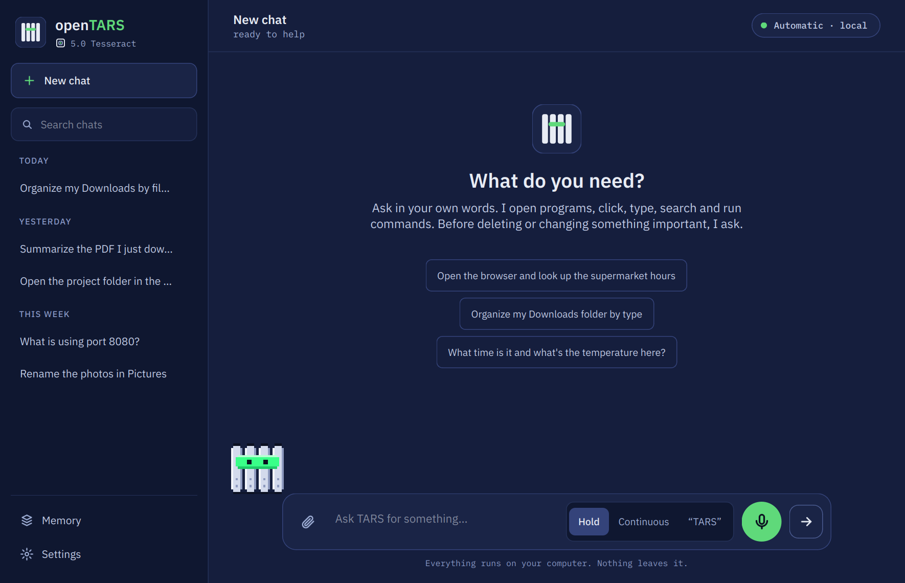
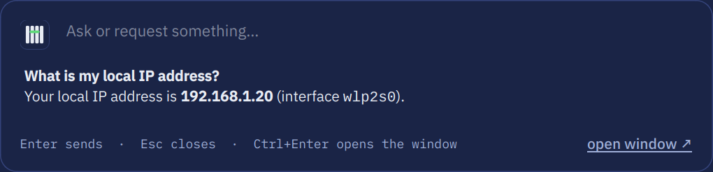
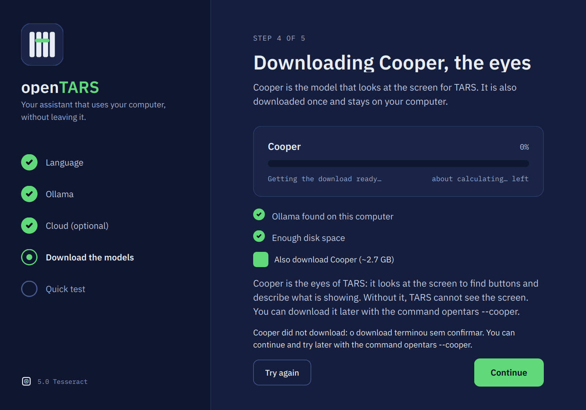

The local AI assistant
for Linux.
Ask in your own words. openTARS opens programs, clicks buttons by their name, types, searches the web, looks at the screen and runs commands. It runs on your machine through Ollama, with an AI trained just for it.

Why openTARS
A desktop assistant that acts, not just chats, and keeps your data on your PC.
Its own AI
Gargantua was trained on thousands of requests solved inside openTARS and checked one by one. It opens, clicks, calculates and creates files on the first try, on a 6 GB graphics card.
Picks the AI by itself
Several layers read each request in milliseconds and route it to the best model you already have: the one that sees the screen, the coding one, the general one or the fastest.
Clicks by name
It presses buttons by the text they show ("7", "=", "Save") through Linux accessibility: no coordinates, in milliseconds, even on Wayland.
Local by default
Everything runs on your PC through Ollama. A cloud model is used only if you turn it on, with your own key. Risky commands always ask first.
What's in 5.0 Tesseract
A new Qt window on top of the same lean core: Ollama underneath, Cooper looking at the screen and Gargantua as the official AI.
💬 New window
History by day with search, a model pill (automatic, local or cloud), a Stop button, steps you can follow and tools with timings.
🛡️ Asks before risky actions
A dangerous command becomes a card with Allow and Deny. Deleting, curl | sh, ssh and sudo never run on their own.
🎙️ Voice, 3 modes
Hold to talk, continuous, or the wake word "TARS". Fully local with faster-whisper and Kokoro, in English and Portuguese.
⏰ Routines
"Every day at 8, open the newspaper." A routine never decides alone: anything you did not pre-approve makes it stop and tell you.
⚡ Quick bar
Ctrl+Alt+Space opens a floating box. Ask, get the answer in place, press Esc to close.
🧠 Visible memory
See what TARS remembers, forget items one by one, export your chats or erase everything.
☁️ Cloud, only if you want
The default is local only. If you choose, use Ollama Cloud, Groq or any OpenAI-compatible address with your own key, stored only on your PC.
🔄 Updates on its own
A new package in the repository is noticed automatically, verified against GitHub's hash and installed with your permission.
See it
Screenshots generated from the real window.






Meet the mascot
The monolith from the logo walks along the chat and reacts to what the AI is doing: thinking, working, asking for permission, done, or a sad face when something fails. After a few quiet minutes, it naps.


Also in the terminal
Run opentars for a chat styled like today's AI command-line tools. It works on a desktop and over SSH, WSL and servers without a GUI.
- Steps you can follow: each action is a
●line with its result under⎿. - Risky commands still ask first, right in the terminal.
- Scriptable:
opentars --chat "request"answers once and exits.
Gargantua, the official AI
A Qwen3 4B model fine-tuned on real openTARS sessions, so it already knows every tool. It is about 2.5 GB, runs on a card with ~3 GB free or on the CPU with 8 GB of RAM, and the installer downloads it for you.
- Trained only on open models' answers, never on closed models.
- Cooper, an optional companion model (~2.7 GB), looks at the screen to find buttons in apps without accessibility.

Install
For Ubuntu, Debian, Linux Mint, Zorin OS, Pop!_OS and derivatives. Paste in a terminal:
wget -O /tmp/opentars.deb https://github.com/project-opentars/openTars-lightweight-local-addon/raw/main/opentars_all.deb && sudo apt install -y --reinstall /tmp/opentars.deb
One command installs everything: system dependencies, Ollama (or uses the one you have), an isolated Python environment and Gargantua. Your history and settings are kept when you update. Then run opentars --autoteste once to check that everything works.
Coming in 5.1
In planning. The list may change before release.
Polish and validation
End-to-end checks of updates, Wayland and fresh installs, plus fixes from 5.0.
Simple and advanced modes
A simpler window for everyday use and a mode with every setting, chosen on first run.
Gargantua Lite
A smaller Gargantua for computers without a graphics card and with little memory.
Easier cloud setup
Sign in to Ollama Cloud without copying keys. Still off by default and always your choice.